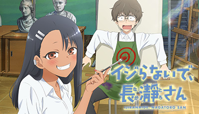
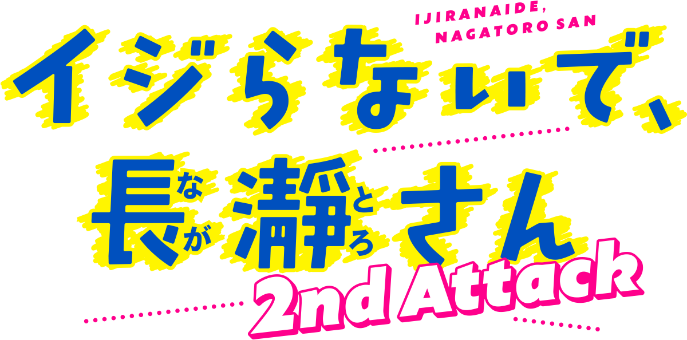

NAGATORO & SENPAI · SEASON 1
Find Season 1-inspired Nagatoro and Senpai figures, posters, clothing, jewelry, keychains, bags, wallets, shoes, coasters, and cosplay items.
SEARCH SEASON 1 MERCH →Season-by-season reviews of Don't Toy with Me, Miss Nagatoro, following Nagatoro and Senpai's changing relationship.


Find Season 1-inspired Nagatoro and Senpai figures, posters, clothing, jewelry, keychains, bags, wallets, shoes, coasters, and cosplay items.
SEARCH SEASON 1 MERCH →Browse 2nd Attack artwork, character figures, posters, apparel, jewelry, bags, accessories, and collectibles.
SEARCH SEASON 2 MERCH →Prices, stock, licensing, and availability can change; verify the current Amazon listing before purchasing.
It is a hub with separate review links for Season 1 and Season 2, also known as 2nd Attack.
The hub focuses on Nagatoro and Senpai and how their relationship develops across the two season review pages.
Official sources: Official Crunchyroll listing